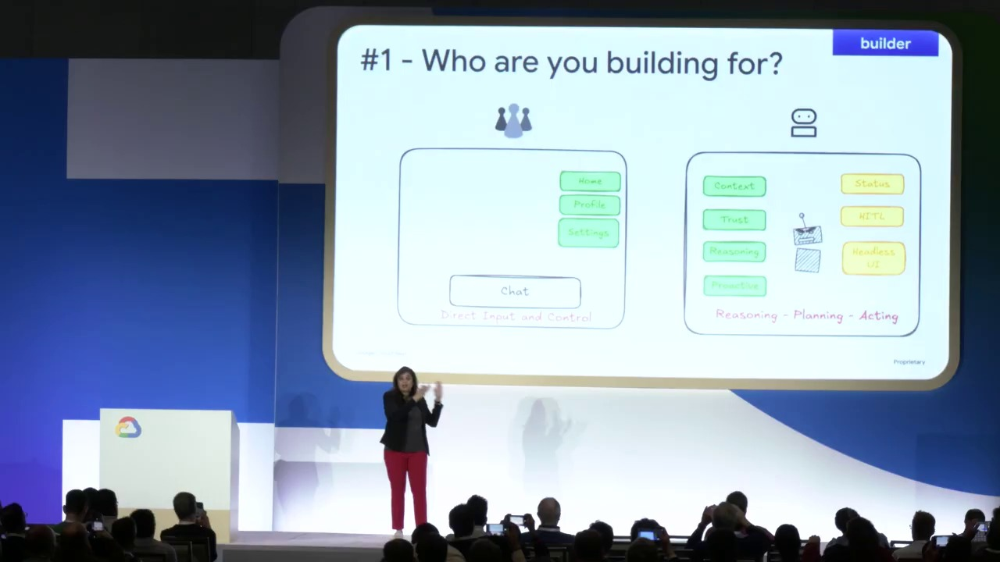
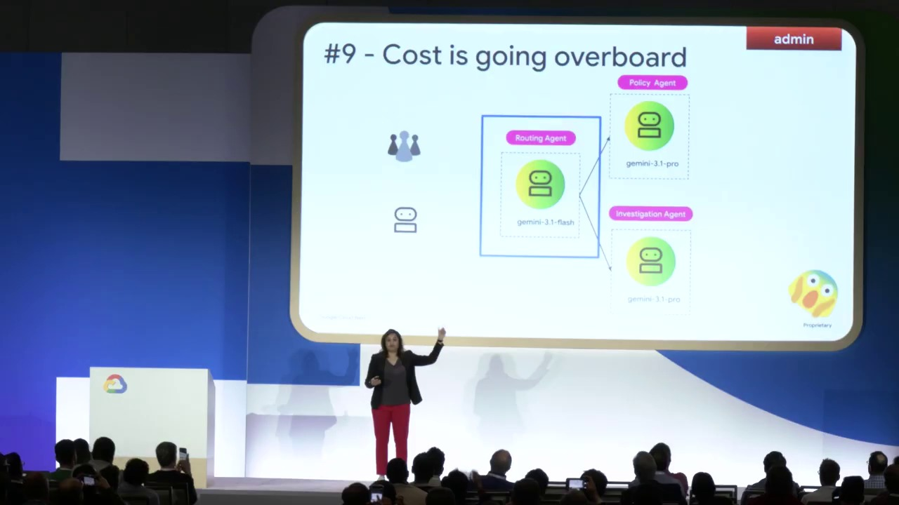
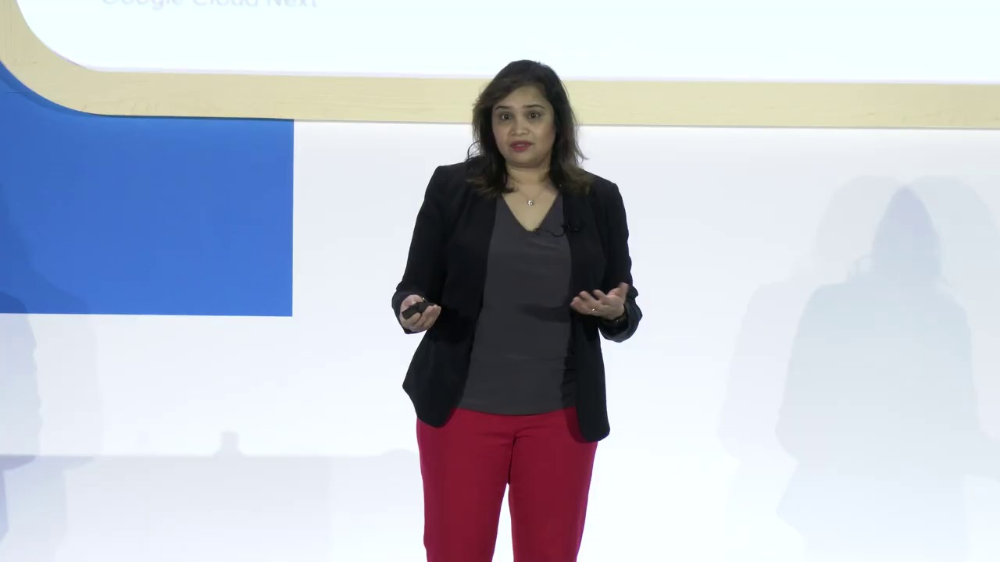
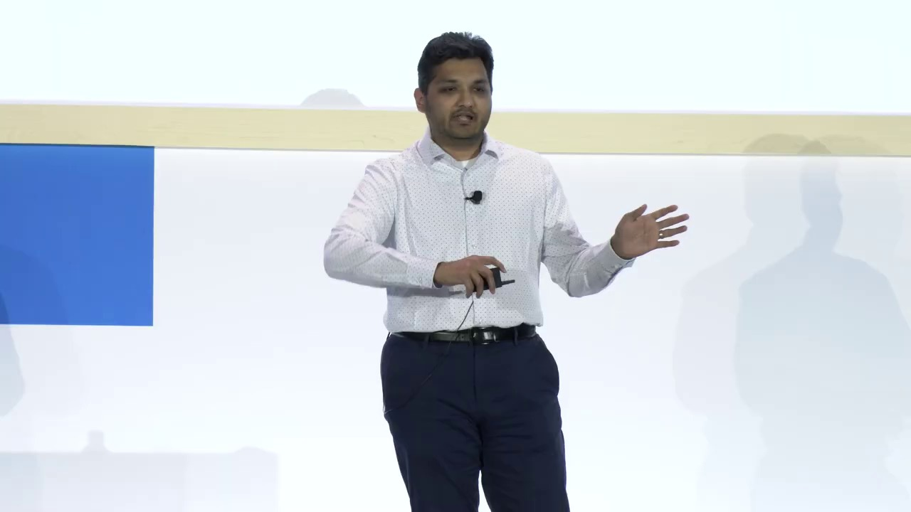
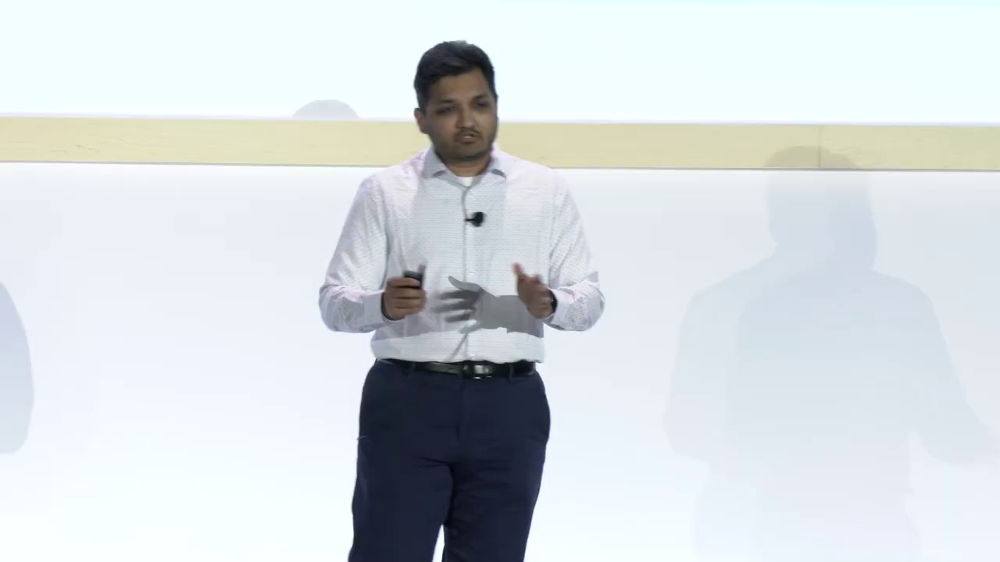
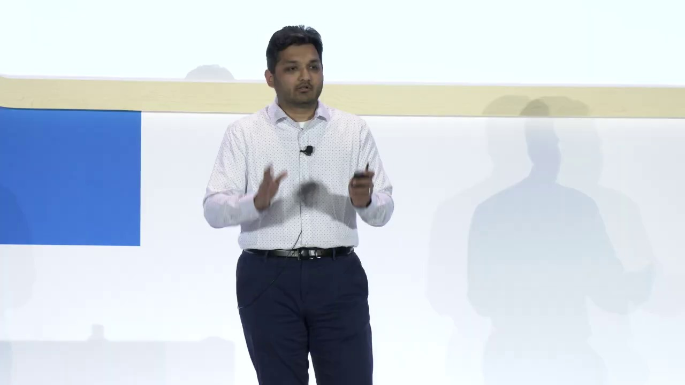

Key Moments








Summary & Script
Build production-ready agents on Google Cloud: A guide for architects and CTOs
Source: https://www.youtube.com/watch?v=Mq4ZY3eE5dI
Video ID: Mq4ZY3eE5dI
Overview
The session walks through how to take AI agents from prototype to production on Google Cloud. Sita (Developer Relations Engineer) and her co‑speakers introduce five core principles—building, scaling, governing, optimizing, and observing agents—while showcasing the Google‑provided tooling (Agent Studio, Agent Garden, ADK, Agent CLI, 80K platform, etc.). The talk culminates with a real‑world case study from Ford Credit on how they operationalize secure, production‑ready agents.
Topics Covered
- Agent development lifecycle – broken into four buckets: Build, Scale, Govern, Optimize (and later Observe).
- Jump‑starting development – match tooling to user personas: visual canvas (Agent Studio) for non‑coders, pre‑built samples (Agent Garden) for low‑code users, and the full‑stack Agent Development Kit (ADK) plus Agent CLI for engineers.
- Separating concerns – introduce three abstraction layers:
- MCP (Micro‑Connector Proxy) – decouples agents from external APIs.
- A2A (Agent‑to‑Agent) – standard protocol for delegating tasks between agents.
- Skills – markdown‑based rule bundles loaded on‑demand to keep context windows small.
- Scaling agents – decisions around memory (short‑term session memory vs. long‑term Memory Bank), retrieval‑augmented generation vs. built‑in platform memory, and runtime choices (Agent Platform Runtime, Cloud Run, GKE, BYOC containers).
- Governance through infrastructure – why prompt‑based controls are insufficient; instead use:
- Agent Identity (SPIFFE‑backed IDs, automatic OAuth2/key management)
- Agent Registry (single pane of glass for agents & tools)
- Agent Policies (IAM‑style and NL‑policy scoping)
- Agent Gateway (central traffic monitor enforcing policies).
- Observability & evaluation – need logs, traces, metrics, plus trajectory testing (did the agent follow the correct decision path). Google Cloud’s monitoring stack integrates with these requirements.
- Ford Credit case study – Siddharth Jain describes how the company adopted the above principles and tooling to ship production agents that handle credit‑related workflows securely and at scale.
Key Takeaways
- Choose the right tool for the user – visual, low‑code, or full‑code environments accelerate adoption across skill levels.
- Abstract external dependencies with MCP and A2A to protect agents from breaking changes and simplify integration.
- Leverage “Skills” to keep LLM context windows lean and enforce business rules without re‑prompting.
- Use platform‑provided memory services (Agent Platform Sessions & Memory Bank) unless you have strict compliance‑driven RAG requirements.
- Select a runtime that matches feature needs, not just raw scalability; start with Agent Platform Runtime, move to Cloud Run or GKE only when justified.
- Govern agents via infrastructure (identity, registry, policies, gateway) rather than relying on prompt engineering.
- Implement full observability and trajectory evaluation to verify not just outputs but also the decision process of agents.
Notable Quotes
- “If you’re building agents, the real challenge this year is building systems around them so they can be resilient, robust, and secure in production.”
- “MCP is an abstraction layer that isolates your agent from external API changes—no more rewrites when a schema shifts.”
- “Skills are a markdown file that packages business rules and loads them on demand, saving context‑window bandwidth and cost.”
- “Governance is not a prompt problem; you need identity, registry, policies, and a gateway to enforce security and control.”
- “We don’t want to over‑engineer the runtime; start simple with the Agent Platform and only graduate to GKE when traffic truly demands it.”
Podcast Script
JORDAN: Welcome to AI Ops, the podcast where we dissect how to turn cutting‑edge AI agents into rock‑solid production services. I’m Jordan, your detail‑oriented engineer, and with me is Mike, who always keeps an eye on the big picture. Today we’re unpacking Google Cloud’s “From Prototype to Production” session, where Sita, Kanchana, and a Ford Credit engineer laid out five principles for building, scaling, governing, optimizing, and observing agents. Let’s dive in.
MIKE: Thanks, Jordan. The first thing that struck me is the shift they highlight—from “building agents” last year to “building systems around agents” this year. It’s the classic move from a proof‑of‑concept to an enterprise‐grade, resilient service. What does that mean in practice?
JORDAN: It means we need a stack that handles everything an agent touches: code, external APIs, state, security, and observability. Google’s answer is a family of tools—Agent Studio, Agent Garden, the Agent Development Kit (ADK), and the Agent CLI—all mapped to different user personas.
MIKE: Right, the persona mapping is smart. Non‑technical SMEs get a visual canvas in Agent Studio, low‑code developers can spin up samples from Agent Garden, and engineering teams dive into ADK with the CLI. It’s a pragmatic way to accelerate adoption across the org.
JORDAN: Exactly. ADK brings production primitives—complex graph orchestration, human‑in‑the‑loop hooks, and a sandboxed code runner. The new Agent CLI ties those primitives together: you can scaffold, evaluate, and deploy an ADK agent to the Agent Platform with a single command.
MIKE: Speaking of scaffolding, the second principle is about separating concerns. They introduced three abstraction layers: MCP, A2A, and Skills. Let’s break those down.
JORDAN: MCP, the Micro‑Connector Proxy, sits between the LLM reasoning core and external services. Instead of hard‑coding a REST call inside the prompt, the agent issues a request to MCP, which translates it to the target API. That decouples the agent from schema changes—if an endpoint version bumps, you only update the MCP connector.
MIKE: That’s a huge ops win. In my experience, every time a downstream API modifies a field, the whole agent pipeline breaks and you have to scramble for a hot‑fix. MCP essentially makes the agent’s “business logic” immutable while the plumbing lives in a separately versioned connector.
JORDAN: The second layer, A2A—Agent‑to‑Agent protocol—standardizes delegation. Instead of writing custom RPC wrappers, one agent can hand off a subtask to another agent, receive a structured response, and continue its own workflow. It’s like microservices for LLMs, with built‑in contract enforcement.
MIKE: And that enables composability at scale. Imagine a loan‑approval pipeline where a “risk assessor” agent calls a “document verifier” agent. A2A ensures you can swap out the verifier with a newer model without touching the risk assessor’s code.
JORDAN: The third layer, Skills, is essentially a markdown bundle of business rules, taxonomies, or static knowledge. By loading a Skill on demand, you keep the LLM’s context window lean—no need to bake every regulation into the prompt each turn.
MIKE: Plus you avoid the cost explosion of sending megabytes of static text to the model. Loading a Skill on demand also lets you version and audit the rule set independently of the agent’s code.
JORDAN: After establishing those abstractions, the third principle tackles scaling. The first decision point is memory: short‑term session memory versus a long‑term Memory Bank.
MIKE: Not every agent needs memory, though. A simple FAQ bot can be stateless. But for use cases like credit‑decision workflows, you need to remember the user’s context across multiple turns and even days.
JORDAN: Google offers two out‑of‑the‑box options. Agent Platform Sessions give you 365‑day TTL short‑term memory per conversation, auto‑provisioned for up to 80K agents. The Memory Bank is a managed vector store—semantic search with asynchronous indexing, so you can retrieve relevant past interactions without adding latency to the request path.
MIKE: If compliance demands, you can still roll your own Retrieval‑Augmented Generation pipeline. But the recommendation is to start with the platform services unless you have a niche requirement, because they’re already integrated with ADK and the Agent CLI.
JORDAN: Runtime selection is the next scaling lever. Options range from local development to Cloud Run, GKE, and the Agent Platform Runtime itself.
MIKE: The key is to avoid over‑engineering. For most teams, the Agent Platform Runtime gives you built‑in memory, identity, and guardrails. If you need container portability, Cloud Run is the next step. GKE is reserved for massive fleets where you need fine‑grained autoscaling and custom networking.
JORDAN: They also mentioned BYOC—bring‑your‑own‑container—support inside the Agent Platform Runtime, with a 7‑day TTL for long‑running workloads. That gives you the flexibility of a custom container while still benefiting from the platform’s security layer.
MIKE: Speaking of security, the fourth principle is governance through infrastructure, not prompt engineering. Prompt‑based guardrails are brittle; they can be bypassed.
JORDAN: Google’s stack introduces four pillars: Agent Identity, Agent Registry, Agent Policies, and Agent Gateway. Identity is SPIFFE‑backed, automatically provisioning OAuth2 tokens and API keys for each agent instance.
MIKE: That solves the credential rotation nightmare. The Registry acts as a single pane of glass for all agents and tools, even third‑party services, giving you inventory and dependency visibility.
JORDAN: Policies are two‑fold: IAM‑style permissions for resource access, and natural‑language policies that restrict what the model is allowed to say. The Gateway sits at the ingress/egress point, enforcing those policies and providing traffic monitoring.
MIKE: In other words, you get zero‑trust for agents: each request is authenticated, authorized, and audited before it hits any backend system.
JORDAN: The final principle is observability and evaluation. It’s not enough to log the final answer; you need traces, metrics, and “trajectory testing.”
MIKE: Trajectory testing checks whether the agent followed the correct decision path, not just whether the endpoint result looks right. You can define success criteria in code, LLMs, or human review, and surface deviations in Cloud Monitoring dashboards.
JORDAN: Google’s monitoring stack—Cloud Logging, Cloud Trace, Cloud Monitoring—integrates natively with the Agent Platform, so you get end‑to‑end telemetry without gluing together third‑party tools.
MIKE: That brings us to the real‑world validation: Ford Credit’s case study. Siddharth walked us through how they built a credit‑approval bot that complies with PCI DSS and handles thousands of concurrent requests.
JORDAN: They started with Agent Garden samples to prototype, then moved to ADK for custom business logic. MCP wrapped their legacy underwriting APIs, while Skills encoded regulatory constraints. Memory Bank stored borrower interaction histories for up to 90 days.
MIKE: On the governance side, they leveraged the SPIFFE‑based Agent Identity to rotate keys automatically, applied IAM policies to restrict access to the credit data store, and used the Agent Gateway to log every outbound request for audit.
JORDAN: Observability was critical for them. They instrumented custom metrics to track “approval latency” and “policy violation rate,” and set up alerts in Cloud Monitoring. Their trajectory tests verified that every loan request passed through the required risk assessment step before approval.
MIKE: The outcome? A production‑grade agent that processes loan applications with sub‑second latency, meets compliance, and can be updated by swapping out MCP connectors without redeploying the core LLM. That’s a textbook example of the five‑principle framework in action.
JORDAN: To recap the takeaways: pick the right tooling for the user persona, isolate external dependencies with MCP and A2A, use Skills to keep context windows tight, start with the platform’s memory services unless you have strict RAG needs, select the simplest runtime that satisfies your feature set, enforce governance via identity, registry, policies, and gateway, and finally, instrument full observability and trajectory testing.
MIKE: When you align those building blocks, the transition from a prototype LLM prompt to a resilient, secure, and observable production service becomes a repeatable engineering pattern rather than a series of ad‑hoc hacks.
JORDAN: That’s all for today’s deep dive. Thanks for joining us on AI Ops. I’m Jordan.
MIKE: I’m Mike. Keep building, keep scaling, and keep your agents secure. See you next time.